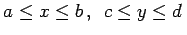
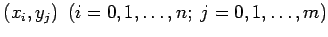
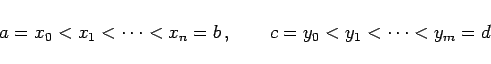
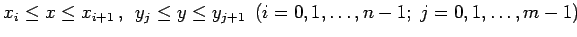
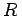

Inhalt Index DeskTop Bronstein

 Numerische Mathematik Darstellung von Kurven und Flächen mit Hilfe von Splines Bikubische Splines
Numerische Mathematik Darstellung von Kurven und Flächen mit Hilfe von Splines Bikubische Splines


Bikubische Splines werden zur Lösung der folgenden Aufgabe verwendet:
Ein Rechtecksbereich R der x,y-Ebene, gegeben durch , werde durch die Gitterpunkte  mit
|  | (19.239) |
in die Maschen Rij zerlegt, wobei die Masche Rij aus den Punkten (x,y) mit
 besteht. In den Gitterpunkten seien von der Funktion f(x,y) die Funktionswerte
gegeben. Gesucht ist eine möglichst einfache, glatte Fläche über , welche die Punkte (19.240) approximiert.